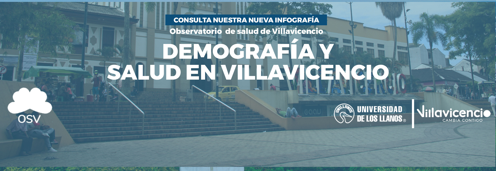

Inicio
Nosotros
Datos de salud
Publicaciones
Contáctenos
Inicio
Nosotros
Datos de salud
Publicaciones
Contáctenos
menu

•
•
•
•
Demografía y salud
Salud mental
Enfermedades crónicas
Salud sexual y reproductiva
Salud ambiental
Emergencias y desastres
Oferta de servicios de salud
Enlaces de interés